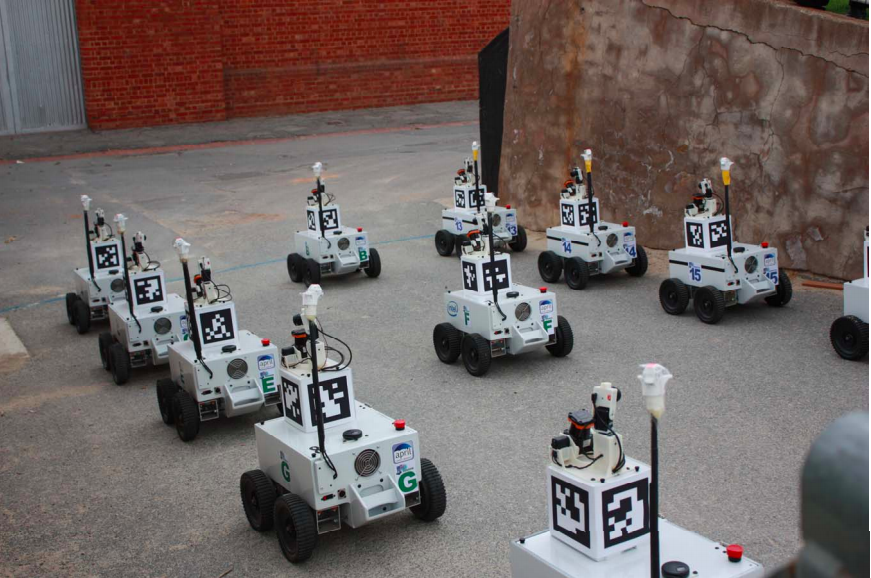
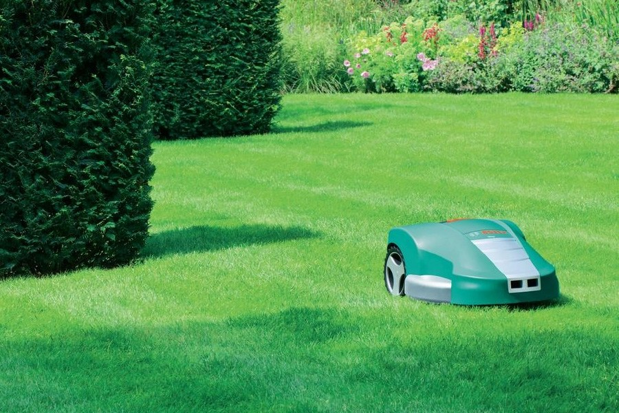
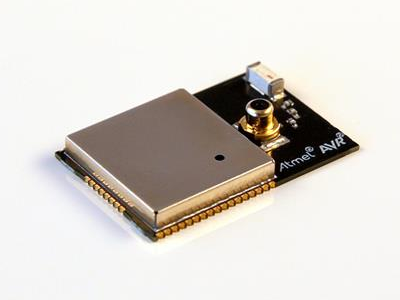
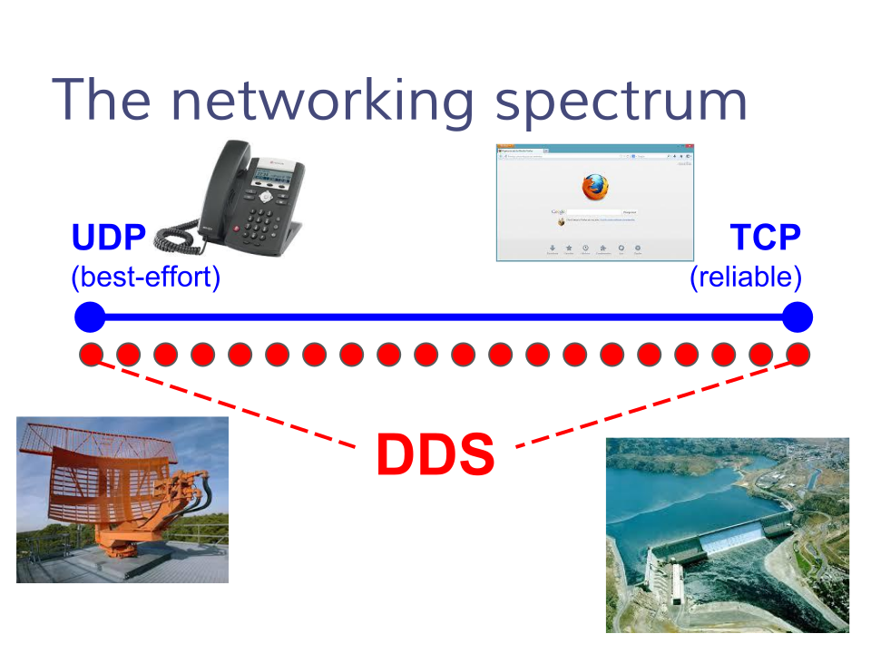

State of ROS 2
Demos and the technology behind
Oct. 3rd 2015
Dirk Thomas, Esteve Fernandez, William Woodall
ROSCon 2015, Hamburg, Germany
Goals of ROS 2

Support multi-robot systems
involving unreliable networks
involving unreliable networks

Remove the gap between
prototyping and final products
prototyping and final products

“Bare-metal”
micro controller
micro controller
Support for
real-time control
real-time control
Cross-platform
support
support
Publish / Subscribe
Source code of the listener (ROS 1)
void callback(const std_msgs::String::ConstPtr & msg)
{
ROS_INFO("I heard: [%s]", msg->data.c_str());
}
int main(int argc, char * argv[])
{
ros::init(argc, argv, "listener");
ros::NodeHandle node;
ros::Subscriber sub = node.subscribe("chatter", 10, callback);
ros::spin();
return 0;
}
Source code of the listener (ROS 1)
// void callback(const std_msgs::String::ConstPtr & msg)
{
// ROS_INFO("I heard: [%s]", msg->data.c_str());
}
int main(int argc, char * argv[])
{
// ros::init(argc, argv, "listener");
// ros::NodeHandle node;
// ros::Subscriber sub = node.subscribe("chatter", 10, callback);
// ros::spin();
return 0;
}
Source code of the listener (ROS 2)
// void callback(const std_msgs::String::ConstPtr & msg)
void callback(std_msgs::msg::String::ConstSharedPtr msg)
{
// ROS_INFO("I heard: [%s]", msg->data.c_str());
printf("I heard: [%s]\n", msg->data.c_str());
}
int main(int argc, char * argv[])
{
// ros::init(argc, argv, "listener");
rclcpp::init(argc, argv);
// ros::NodeHandle node;
auto node = rclcpp::Node::make_shared("listener");
// ros::Subscriber sub = node.subscribe("chatter", 10, callback);
auto sub = node->create_subscription<std_msgs::msg::String>(
"chatter", rmw_qos_profile_default, callback);
// ros::spin();
rclcpp::spin(node);
return 0;
}
C++11 wherever it makes it easier,
the callback can be a lambda.
The node's name is passed
to the node constructor,
not the global init() function.
The subscriber is templated on the message type.
spin() is called on the node,
not globally.
DDS vendors
| Company and product name |
License |
RMW impl. |
Comments |
|
|---|---|---|---|---|
| RTI Connext |
commercial, research |
stat. & dyn. impl. | ||
 |
PrismTech OpenSplice |
commercial, LGPL |
only version 6.4 is LGPL | |
| TwinOaks CoreDX |
commercial | |||
| eProsima FastRTPS |
LGPL | no support for fragmentation yet |
||
| OSRF FreeRTPS |
Apache 2 | partial | small part of DDS only aiming for emb. devices |
|
DDS provides QoS “for free”
- Industry-proven QoS strategies
- Extensive DDS documentation
- Shared knowledge
- Frees us from implementing a complex custom solution
- Using UDP (instead of TCP) allows multicasting
- Support unreliable networks, e.g. drones, IoT, high latency links

Some of the QoS settings
- ROS1: UDPROS/TCPROS ROS2: Reliability
Best effort: messages arrive “on time“
at the expense of losing someReliable: all messages must reach the other end
- ROS1: Queueing ROS2: History
Keep last: only store N messages,
configurable with queue depth optionKeep all: store all messages
- ROS1: Latching ROS2: Durability
Volatile: no persistenceTransient local: durable data is maintained by the writer
- Much richer spectrum of QoS capabilities with ROS2
QoS profiles
typedef struct RMW_PUBLIC_TYPE rmw_qos_profile_t
{
enum rmw_qos_history_policy_t history;
size_t depth;
enum rmw_qos_reliability_policy_t reliability;
enum rmw_qos_durability_policy_t durability;
} rmw_qos_profile_t;
- Predefined profiles
- sensor data
- services
- parameters
- Integration with existing DDS deployments
- every policy has a “system default“ option
- optionally use DDS vendor tools
to define QoS settings and profiles - do not disrupt existing DDS deployments
Bridging between ROS versions
ROS 2
- New features
- Superior communication
ROS 1
- Plenty of tools
- Existing funtionality
Dynamic Bridge
Questions...
For more information go to:
www.ros2.org